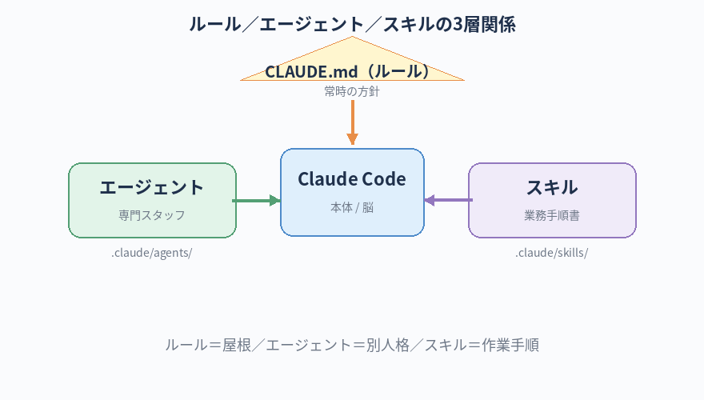

Claude Code には、デフォルトの会話だけでなく 「ルール」「エージェント」「スキル」という、AI の動き方を仕込む仕組みがあります。
この章では、それぞれが何で・何ができて・どう使うかを 実際に手を動かして体験します。
使いこなせるようになると、毎回同じ指示をしなくても、AI が「あなた仕様」で動いてくれるようになります。
Claude Code を使い倒す — ルール／エージェント／スキル
この章のゴール
絶対に覚える：Claude Code 応用機能の用語
この章は用語が一気に増える章です。「ルール／エージェント／スキル」の3つは口で違いを説明できる状態を目指してください。
CLAUDE.md (Rule)クロード ドット エムディー／ルール
- 一言で
- そのフォルダで Claude が常に守るルールを書いておく Markdown ファイル
- たとえると
- 就業規則／チームの作法書。Claude 起動時に必ず読まれる
- 関連
- 階層対応 / 優先順位
Subagentサブエージェント
- 一言で
- 専門の役割・性格を持った別人格 AI。
.claude/agents/<名前>.mdで定義 - たとえると
- 社内の専門スタッフ（営業／編集／デザイナー）。必要な時に呼び出す
- 関連
- YAML frontmatter / Task tool
Skillスキル
- 一言で
- 特定の作業のやり方をパッケージ化したもの。
.claude/skills/<名前>/SKILL.md - たとえると
- 業務手順書。「PDF 整形」「ブログ整形」など、必要な時に Claude が動的に読み込む
- 関連
- Skills / 公式スキル
Slash Commandスラッシュコマンド
- 一言で
/コマンド名で呼び出せる、自分専用のショートカット指示- たとえると
- 「
/reviewと打ったら毎回コードレビューが走る」のように仕込んでおける - 関連
- .claude/commands/
Hookフック
- 一言で
- 「ファイル編集の前後」などイベントに反応して自動実行する仕掛け
- たとえると
- 「ドアを開けたらライトが点く」のセンサー。コミット前にフォーマッタを走らせる、テストを実行する、など
- 関連
- settings.json / 自動化
Permissionパーミッション／許可
- 一言で
- Claude が勝手にやって良い操作の範囲を定めた設定
- たとえると
- 新人スタッフに渡す「権限カード」。「この範囲なら確認なしで動いていい」と決められる。
.claude/settings.jsonに書く - 関連
- Permission denied / 自動承認
そもそも：Claude Code に「クセ」を仕込む3つの方法
Claude Code を素のまま使うと、毎回ゼロから「日本語で答えて」「コミットメッセージは○○の形式で」など、同じ指示を繰り返すことになります。 そのうち面倒になります。
Claude Code には、こうした「いつも守ってほしいこと」「専門家として動いてほしい役割」「特定の作業のやり方」を、ファイルとして仕込んでおく仕組みが3つあります。
| 仕組み | 役割 | たとえると |
|---|---|---|
| ルール ( CLAUDE.md) |
AI に常に守らせたい方針・好み・禁止事項 | 会社の就業規則／チームの作法 |
| エージェント ( .claude/agents/) |
専門の役割・性格を持った別人格を呼び出せる | 社内の専門スタッフ（営業、デザイナー、エンジニア…） |
| スキル ( .claude/skills/) |
特定の作業のやり方をパッケージ化したもの | 「PDF 整形マニュアル」「Excel 操作マニュアル」のような業務手順書 |

1. ルール（CLAUDE.md）— 一番まず使う
何ができるか
プロジェクトのフォルダ直下に CLAUDE.md というファイルを置いておくと、Claude Code はそのフォルダで起動するたびに必ずこのファイルを読むようになります。
ここに「常に守ってほしいルール」を書いておけば、毎回指示する必要がなくなります。
実際に使ってみる
第6章で作った ~/dev/hello-claude/ フォルダで試してみましょう。
cd ~/dev/hello-claude
claude --continue
Claude Code が起動したら、こう頼みます：
このフォルダのルートに CLAUDE.md を作ってください。中身は次の内容で：
・回答は必ず日本語で
・初心者向けなので、専門用語は必ず初出時に1〜2行で噛み砕く
・コードを書く前に、何を作るかを先に箇条書きで提示する
・破壊的なコマンド（rm -rf、sudo を伴うもの）は絶対に勝手に実行しない
ファイル形式は普通の Markdown でお願いします。
・回答は必ず日本語で
・初心者向けなので、専門用語は必ず初出時に1〜2行で噛み砕く
・コードを書く前に、何を作るかを先に箇条書きで提示する
・破壊的なコマンド（rm -rf、sudo を伴うもの）は絶対に勝手に実行しない
ファイル形式は普通の Markdown でお願いします。
Claude が CLAUDE.md を生成して、許可を求めてきます。承認すると、フォルダのルートにファイルが置かれます。
効果を確認
一度 /exit で終了して、もう一度 claude で立ち上げ直してください。
今度は最初から日本語で応答が始まり、専門用語の補足も自動で入るようになります。
CLAUDE.md は、フォルダ階層をたどって読まれます。
例：
例：
~/dev/CLAUDE.md と ~/dev/hello-claude/CLAUDE.md が両方あれば、両方適用されます。
「全プロジェクト共通のルール」と「この案件だけのルール」を分けて書けるということです。
書くと便利な項目（テンプレ）
- 言語ルール（日本語で／英語で）
- コードのスタイル（インデント、命名）
- 禁止事項（git push を勝手にしない、本番環境を触らない）
- プロジェクト固有の用語集（社内用語の正しい綴り）
- 使う技術スタック（Firebase / Notion など、混乱しないよう明示）
2. エージェント — 役割を持った別人格を呼び出す
何ができるか
Claude Code には、サブエージェント（小さい専門 AI）を呼び出す機能があります。 例えば「コードレビュー専門」「リサーチ専門」「校正専門」のような役割と性格を持ったエージェントを定義しておくと、必要な時に呼び出せます。
本書を作っているこの Poolside の業務でも、aiguide-leader（プロジェクト統括）、aiguide-editor（文章担当）など、複数のエージェントが定義されています。
あなたも自分用に作ってみましょう。
実際に作ってみる
エージェントの定義は .claude/agents/<名前>.md として置きます。
Claude に頼んで作ってもらうのが早いです。
このフォルダ用に、初心者向けの「コードレビュー担当」エージェントを作ってください。
・名前は
・ファイルは
・性格：穏やかで、初心者を萎縮させない／指摘の前に「良いところ」を1つ必ず褒める／改善案は具体的に
・対象：HTML / CSS / JavaScript の初級レベルのコード
Markdown の YAML frontmatter（name / description / model）込みで作ってください。
・名前は
my-reviewer・ファイルは
.claude/agents/my-reviewer.md・性格：穏やかで、初心者を萎縮させない／指摘の前に「良いところ」を1つ必ず褒める／改善案は具体的に
・対象：HTML / CSS / JavaScript の初級レベルのコード
Markdown の YAML frontmatter（name / description / model）込みで作ってください。
Claude が定義ファイルを生成してくれます。承認すると .claude/agents/my-reviewer.md が出来ます。
呼び出してみる
エージェントを使うには、Claude Code に直接「my-reviewer エージェントを使ってください」と頼むか、Claude が自分で適切なエージェントを選んで呼び出します。
第8章で作った hello-world フォルダの index.html を、my-reviewer エージェントに見てもらってください。
初心者の最初のコードとして、良いところと改善ポイントを教えて欲しいです。
初心者の最初のコードとして、良いところと改善ポイントを教えて欲しいです。
Claude が my-reviewer として動き、「良いところ」を必ず先に挙げた上で、改善案を提示してくれます。
使い分けの感覚
- 定型作業がある：レビュー・校正・命名チェック・テスト走らせ など → エージェント化すると毎回同じ品質で動く
- 性格を変えたい：厳しいレビュアー／優しいレビュアーを使い分けたい時など → 別エージェントとして用意
- 並列化したい：複数のエージェントに同じ題材を渡して、別の視点を集める使い方も可能
3. スキル — 「やり方」のパッケージ
何ができるか
スキル（Skills）は、Claude Code が 特定の作業のやり方を、必要になった時にだけ動的に読み込む仕組みです。 エージェントが「人格」だとすると、スキルは「業務手順書」に近いです。
例：
- PDF を編集するスキル（PDF を切り貼り・結合・抽出する手順がパッケージ化されている）
- Excel を読み書きするスキル
- 画像のリサイズ・トリミングをするスキル
- 会社のブランドガイドに沿って LP を作るスキル
Anthropic が公式に提供しているスキル群もあれば、自分で作って配置することもできます。
実際に作ってみる（簡単なもの）
スキルの定義は .claude/skills/<スキル名>/SKILL.md として置きます。
今回は「ブログ記事の体裁を整えるスキル」を作ってみます。
このフォルダに、新しいスキル「blog-formatter」を作ってください。
パス：
内容：
・Markdown のブログ記事を、Poolside の社内ブログ向けに整形する
・タイトルは H1 で、必ず冒頭に置く
・各 H2 の後ろに「読了時間の目安」を 1 行入れる
・最後に「関連リンク」セクションを必ず置く
Markdown の YAML frontmatter（name / description）込みで作ってください。
パス：
.claude/skills/blog-formatter/SKILL.md内容：
・Markdown のブログ記事を、Poolside の社内ブログ向けに整形する
・タイトルは H1 で、必ず冒頭に置く
・各 H2 の後ろに「読了時間の目安」を 1 行入れる
・最後に「関連リンク」セクションを必ず置く
Markdown の YAML frontmatter（name / description）込みで作ってください。
Claude がスキル定義ファイルを作ってくれます。
呼び出してみる
blog-formatter スキルを使って、以下のドラフトを整形してください。
（ここにドラフトの Markdown を貼る）
（ここにドラフトの Markdown を貼る）
Claude がスキル定義を読み込んで、その手順に沿って整形してくれます。
スキルの真価は、定型業務の知識を組織で共有できるところにあります。
たとえば「Poolside の納品書フォーマット」のスキルを誰か1人が作っておけば、他のメンバーも同じスキルを使うだけで同じ品質の納品書が作れる、という運用ができます。
たとえば「Poolside の納品書フォーマット」のスキルを誰か1人が作っておけば、他のメンバーも同じスキルを使うだけで同じ品質の納品書が作れる、という運用ができます。
3つの仕組みの使い分け（早見表）
| こんな時は | これを使う |
|---|---|
| 「常に日本語で」「コミットメッセージはこの形式で」など 常時の方針 | ルール（CLAUDE.md） |
| 「コードレビューしてほしい」「校正してほしい」など 役割を持った相談相手が欲しい | エージェント |
| 「PDF 整形」「Excel 集計」「ブログ整形」など 具体的な作業手順を仕込みたい | スキル |
4本目の柱：議事録運用 — Poolside の必須ルール
Poolside では、Claude Code を使った全ての案件で 「手動ログ補完」と呼ぶ議事録を、案件フォルダの中に残す運用を徹底しています。 これは AI を使う以上、絶対にやってほしい習慣です。
なぜ議事録を残すのか
-
AI の会話ログだけだと、後から読み返すのが大変。
claude が自動保存する
.jsonlログは、AI のためのものであって人間が読むものではない - 「決めたこと」「決めなかったこと」「次の一手」を人間の言葉で残すと、明日の自分・引き継ぎ相手・上長レビュー時に役立つ
- 同じ案件で複数セッションをまたぐ時、議事録があれば迷子にならない。次回開いて議事録を読めばすぐに脳内が復旧する
- 外部に説明を求められた時の証拠になる（「このタイミングでこう判断した」を残せる）
運用ルール — どこに、何を、どう残すか
① 配置場所
Poolside の標準は、案件フォルダごとに 手動ログ補完/ フォルダを置く形です。
~/dev/
└── <案件フォルダ>/
├── （案件ファイル）
└── 手動ログ補完/
├── index.html ← 議事録一覧トップ（起動コマンド／判断待ち／ログ一覧）
├── assets/style.css ← 共通スタイル
└── meetings/
├── 2026-05-01_キックオフ.html
├── 2026-05-02_進捗共有.html
└── ...
② 1セッション = 1議事録ページ
1回の Claude Code セッションが終わったら、その内容をまとめた 1ページを meetings/YYYY-MM-DD_テーマ.html として作成します。
ページ構成は以下を最低ライン：
- 日付・案件タイプ・参加メンバー（あなた、claude、エージェントなど）
- セッションのテーマ（1〜3行）
- 決定事項（リスト）
- 未決事項（リスト）
- 次の一手（次回最初に取りかかること）
③ 起動コマンドを議事録トップに置く
各案件の 手動ログ補完/index.html には、その案件用の claude 起動コマンドを載せておきます：
cd "~/dev/<案件フォルダ>" && claude --continue
これで「このターミナルで、いつもの続きから」を1コマンドで再開できます。
Cursor で案件フォルダを開いて内蔵ターミナル（
上記の
control + `）を起動した場合は、cd 部分は不要で、claude --continue だけで OK です。上記の
cd ... && claude --continue は「ターミナル.app から1コマンドで再開する」用の保険として議事録に載せておく形です。
テンプレートの活用（dev2006 の社内雛形）
Poolside では、dev2006/_template/ に新規案件用の議事録雛形が用意されています。
新しい案件を始める時は、この雛形をコピーして使えば、毎回ゼロから組む必要はありません。
詳しくは社内の上長（居村）に 「dev2006 の新規案件初期化フロー」として聞いてください。 雛形を使った自動初期化コマンドも用意されています。
AI に議事録を作らせる
議事録を毎回手書きするのは大変です。セッション終了時に Claude に頼んで自動生成させましょう。
今日のセッションを
フォーマットは既存の議事録（meetings/ 配下にあれば）を参考に。
最低限の項目：日付／テーマ／決定事項／未決事項／次の一手。
機密情報は本文に書かないこと（取引先名・契約金額など）。
手動ログ補完/meetings/<今日の日付>_<テーマ>.html として記録してください。フォーマットは既存の議事録（meetings/ 配下にあれば）を参考に。
最低限の項目：日付／テーマ／決定事項／未決事項／次の一手。
機密情報は本文に書かないこと（取引先名・契約金額など）。
Claude が議事録 HTML を作って提案してくれます。承認すれば meetings/ に追加されます。
最後に 手動ログ補完/index.html のセッションログ一覧にもエントリを追加してもらえば完了です。
セッションを閉じる前のお作法
- 「今日やったことを議事録にしてください」と Claude に頼む
- 生成された議事録の機密情報チェック（取引先名・金額などが混入していないか）
- 必要なら手で微修正
- 議事録一覧に追加
/exitで終了
議事録を残さない奴は、半年後に「あの案件何やったっけ」となる。マジで。 AI 時代になっても、いや、AI 時代だからこそ 「人間が読み返せる記録」 の価値は上がっている。
最初は AI に丸投げで OK。1日 5 分の手間を惜しんだやつから、引き継ぎや振り返りで詰む。 逆に習慣化したやつは、自分の業務の歴史が積み上がっていく。後で見返した時の財産になる。
もう一段：スラッシュコマンドと hooks
さらに上を目指したい人向けに、軽く触れておきます。今は名前だけ覚えて、必要になったら戻ってきてください。
-
スラッシュコマンド（
/コマンド名）：自分用のショートカット指示を登録できます。例：/reviewと打ったらコードレビューが走るように仕込む。 - hooks：「Claude がファイルを編集したら自動でテスト走らせる」「コミット前にフォーマッタをかける」など、イベントに反応して自動実行する仕掛け。
Claude Code のスラッシュコマンドと hooks について、初心者向けに 5 行で要点を教えてください。
ここまで来ると、もう「AI を使う側」じゃなくて「AI を仕込む側」だ。 ルール・エージェント・スキルを自分用に育てると、半年後にはあなただけが持つ「武器」になる。
最初の一歩として、まずは CLAUDE.md に自分のクセや好みを書き溜めることから始めろ。
育てた CLAUDE.md は、転職しても自分の財産として持ち歩けるからな。
本章のチェックリスト
すべてチェックを付けると「次の章へ」のリンクが解放されます。実際に作って動かしてからチェックしてください。
チェック 0 / 7
次の章へ
次は、ここまで仕込んだ Claude Code を 出先からスマホで動かす方法を扱います。 通勤中、出張中、商談の合間に、AI に作業を進めてもらうための仕組みです。